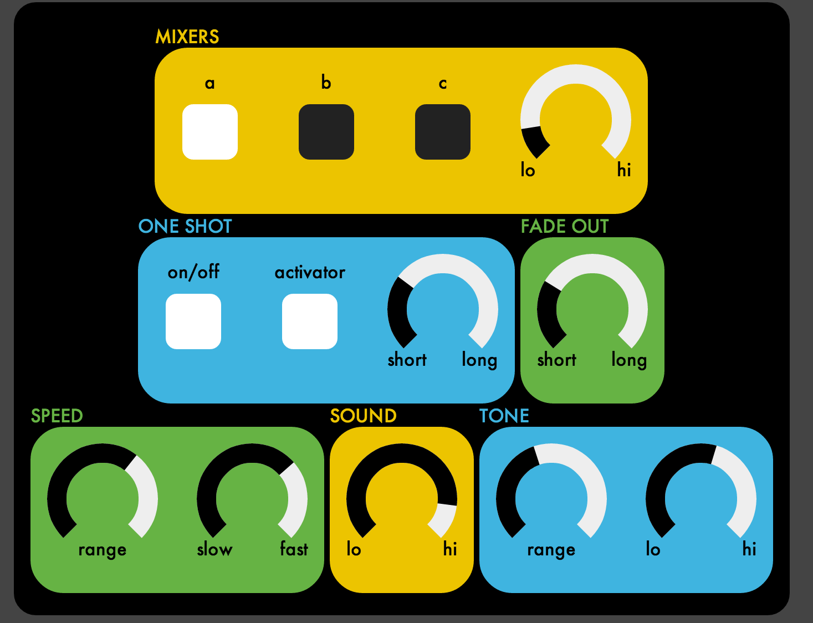

Here is another emulation of the Remco soundfx machine, this time for HTML5 audio.

The soundfx machine is a pretty weird toy. It's basically a noise generating chip in a box, with each pin pulled out to a knob on the front panel. It's the same chip that was used to create the space invaders sounds, among others classic video games. I still don't know who thought it was a good idea to give this to children!
I had a lot of fun playing with my previous emulation, so I thought I'd build a web-based one as a way to learn about the current state of Web Audio. The main audio coding only took a few hours, which is a testament to how well thought out and efficiently designed the Web Audio API is. I ran into a few nasty bugs (the most embarassing was this, which has existed since May 2011 on both Chrome and Safari), but basically it was smooth sailing.
Check out the coffeescript code on github!